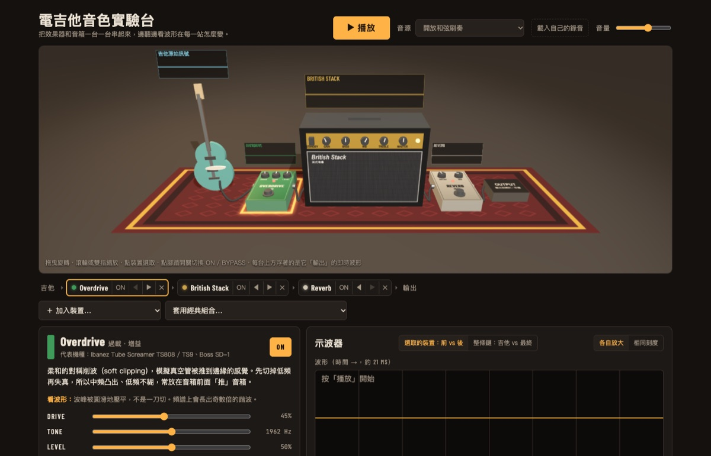
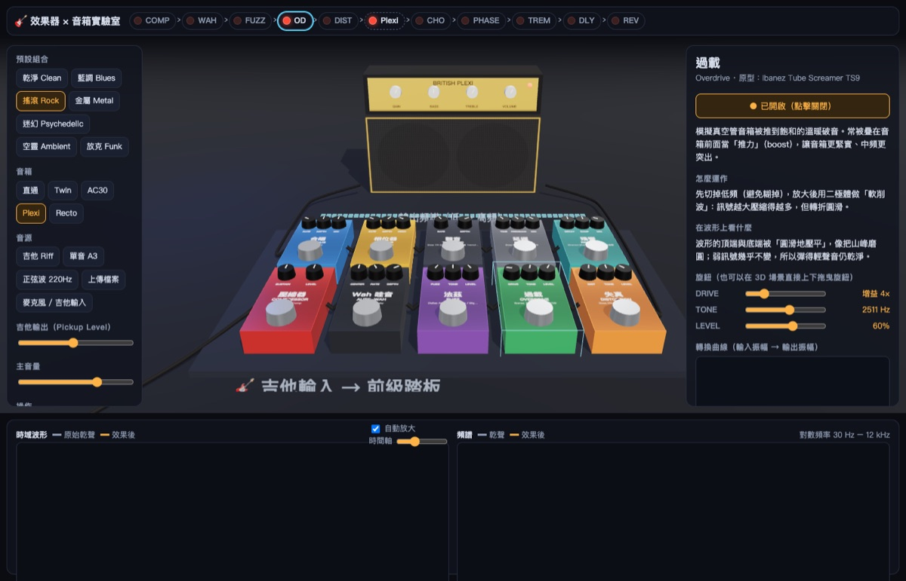

pedal-demo
電吉他效果器與音箱的 3D 互動介紹
踩下效果器、換一台音箱，聽聲音怎麼變，同時看波形怎麼變。同一份需求交給兩個 Claude 模型各自從零做了一次，兩個版本都可以直接在瀏覽器裡玩。

Claude Sonnet 5.5 的版本
效果器 × 音箱 3D 互動實驗室
3D 場景裡的旋鈕可以直接拖曳。除了內建音源，還能接麥克風或吉他輸入。十顆效果器的順序固定，用開關決定要不要疊上去。
開啟這個版本開始之前
- 進去之後要先按「播放」或「開始」才會出聲，瀏覽器不允許網頁自己開始播放。
- 建議戴耳機，音量先調小。失真類的效果器疊起來會很大聲。
- 電腦或平板比較適合，手機螢幕偏小。
- 吉他聲是程式即時合成的，不是錄音。效果器與音箱呈現的是該類型的聲音特徵，不是逐一元件的電路模擬。
兩個模型拿到的需求
對於電吉他相關的音箱/效果器知識很有興趣, 想要製作一個3D互動式的介紹, 可以嘗試各種代表性的音箱或效果器的效果, 除了可以聽到聲音怎麼被改變, 也可以看到波形怎麼樣的變化, 各種效果器和音箱的效果還可以疊加
Sonnet 是在隔離環境裡做的，看不到 Fable 先做好的版本。隔離方式與執行條件見 sandbox 的說明。
兩個版本的差異
| Fable 5.2 | Sonnet 5.5 | |
|---|---|---|
| 效果器 / 音箱 | 10 種 / 4 款 | 10 種 / 4 款 |
| 疊加方式 | 可增刪、可前後搬移 | 順序固定，只能開關 |
| 看波形 | 每一台各有即時波形，可看任一台的前後 | 吉他原音 vs 最終輸出 |
| 3D 旋鈕 | 只會跟著滑桿轉 | 可直接拖曳 |
| 音源 | 4 段樂句、單音、正弦波、上傳 | 1 段樂句、單音、正弦波、上傳、麥克風 / 吉他輸入 |
| 其他 | 相同刻度切換、6 組預設 | 時間軸縮放、3D 頻譜長條、7 組預設 |
這張表是 Fable 整理的，也就是比較的其中一方。模型聽不到聲音，音色好壞請自己試聽判斷。